# A tibble: 3 × 3
group count mean
<fct> <int> <dbl>
1 ctrl 10 5.03
2 trt1 10 4.66
3 trt2 10 5.53Anova
Part I
2026-10-13
Checklist
– Homework-2 is LIVE and due on Friday (10-16) at 11:59pm
> 24-hour late window
> Please start early– Homework-1 is graded
> Solutions are on Moodle
> Regrade window until Friday 10-9 at 5:00pm– Don’t forget about the Statistics Experience (12-1)
– Exam-2 is on 10-29
– Exam-1 is released! Let’s talk a little about it
Exam-1
Please see the announcement of Moodle
– Regrade window from 5:00pm today through 5:00pm Friday
– Exam scaled due to typo + sampling distribution question
– Questions are encouraged! Statistics builds on itself. Please do not hesitate to make an appointment / come to office hours
– One exam does not dictate your entire grade in the course
Questions
Warm up
A meteorologist wants to determine whether the proportion of days with measurable rainfall differs between two cities. In City A, it rained on 42 of 120 randomly selected days. In City B, it rained on 30 of 110 randomly selected days. Use a significance level of \(\alpha = 0.05\) to test whether the population proportions of rainy days differ between the two cities.
– Number of variables
– Type of variables
– Explanatory vs response
– Null and alternative hypothesis
Warm-up
How is a chi-square test of independence different than a difference in means/proportions test?
How is a chi-square goodness of fit test different than a chi-square test of independence?
Warm-up
True or False: You can use chi-square tools on difference in proportions/single proportion scenarios
True or False: Chi-square tests do not have a directional alternative hypothesis, and are always one-sided tests
Questions
So far
| Method | Population Parameter | Sample Statistic | Theoretical Distribution | Degrees of Freedom |
|---|---|---|---|---|
| Difference in proportions | x | x | x | x |
| Difference in means | x | x | x | x |
| Chi-square test of independence | x | x | x | x |
So far
| Method | Population Parameter | Sample Statistic | Theoretical Distribution | Degrees of Freedom |
|---|---|---|---|---|
| Difference in proportions | \(p_1-p_2\) | \(\hat{p}_1-\hat{p}_2\) | \(Z \approx N(0,1)\) | N/A |
| Difference in means | \(\mu_1-\mu_2\) | \(\bar{x}_1-\bar{x}_2\) | \(T \sim t_{df}\) | \(df\) estimated conservative \(min(n_1-1,n_2-1)\) |
| Chi-square test of independence | Association between two categorical variables | \(\chi^2=\sum \frac{(O-E)^2}{E}\) | \(\chi^2 \sim \chi^2_{df}\) | \((r-1)(c-1)\) |
New scenario
New scenario
Results from an experiment to compare yields (as measured by dried weight of plants) obtained under a control and two different treatment conditions. We are interested in seeing if the dried weight of plants is different across the three yields.
Results from an experiment to compare yields (as measured by dried weight of plants) obtained under a control and two different treatment conditions.
What are the variables?
Extension
ANOVA is an extension from difference in means, where the test statistic is the variability within group vs the variability across groups.
What do I mean by variability?
Example
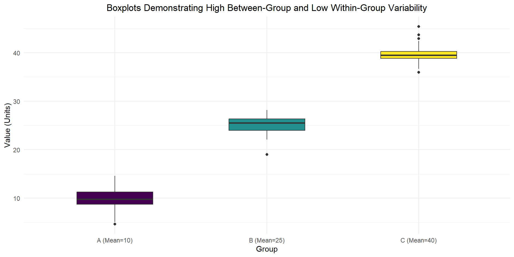
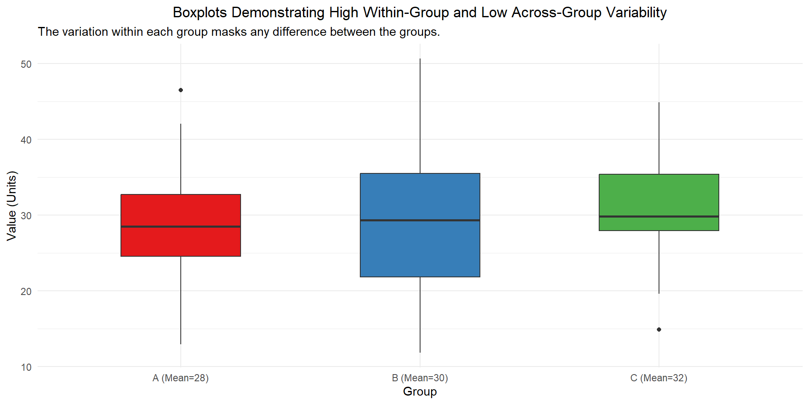
Big idea
How is the variability within vs the variability between! Keep this in mind as we go through the process…
… especially when we get to calculating our test statistic.
Before we get started
Results from an experiment to compare yields (as measured by dried weight of plants) obtained under a control and two different treatment conditions.
Why can we not answer our research question right now?
# A tibble: 3 × 3
group count mean
<fct> <int> <dbl>
1 ctrl 10 5.03
2 trt1 10 4.66
3 trt2 10 5.53Plants
What would our null and alternative hypotheses in words / notation be?
Plants
Ho: \(\mu_c = \mu_1 = \mu_2\)
Ha: at least one population mean weight across the three groups is different
Assumptions
– Independence
– Normality (not just going to look at sample size)
– Equal Variance
Independence
– between groups
– across groups
Normality
Previously, with a quantitative response, we checked the normality assumption by looking at our sample size. If our sample size was \(\ge\) 30, the CLT kicks in and we can trust that the sampling distribution of the difference in means is roughly normally distributed. However, as we will see, our statistic is a ratio of mean squares, not simply a standardized difference between two means.
Takeaway: With non-normal data, large samples can make ANOVA more robust, but the CLT alone does not guarantee an exact F-distribution.
Now what?
Now what
– Plot the raw data
– Normal q-q plot
Normality
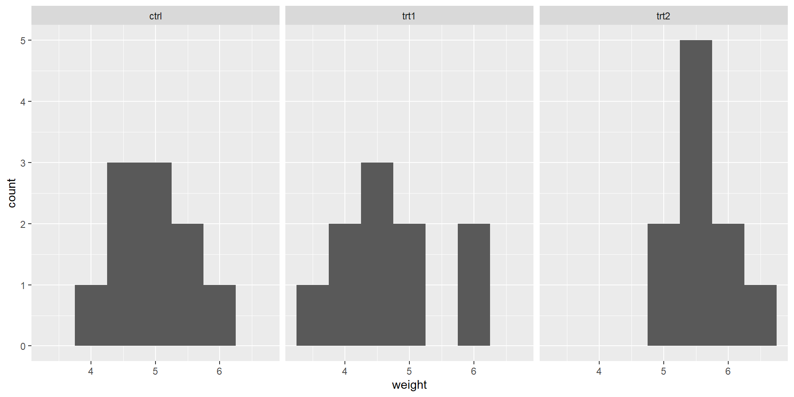
Plants q-q
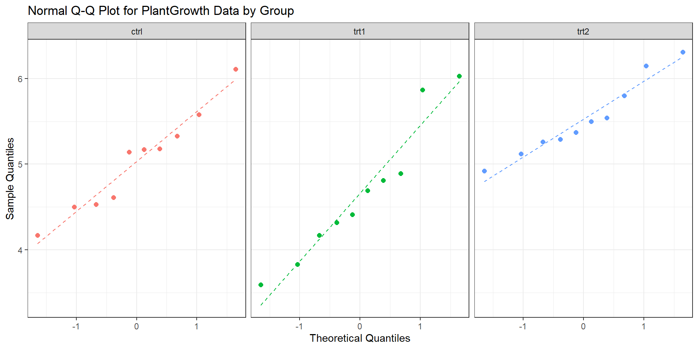
– What are Sample Quantiles?
– What are Theoretical Quantiles?
– What are we looking for?
Sample Quantiles
These are values that we actually observe from our data set!
These go on the y-axis of or normal q-q plot
Theoretical Quantiles
The theoretical quantiles are the quantiles we would expect to see if the data followed a normal distribution.
– They represent the values predicted by a theoretical normal distribution.
– They are plotted on the x-axis.
Theoretical Quantiles
– Order our observed data from smallest to largest (rank)
– Divide up the theoretical normal distribution into EQUAL corresponding quantiles, based on the ranks of our observations
– Calculate the quantile value
\(q_i = \Phi^{-1}\left(\dfrac{i-0.5}{n}\right)\)
\(q_i\) = theoretical quantile for observation \(i\)
\(\Phi^{-1}\) = inverse standard normal CDF (the quantile function)
\(i\) = rank of the observation, from smallest to largest
\(n\) = sample size
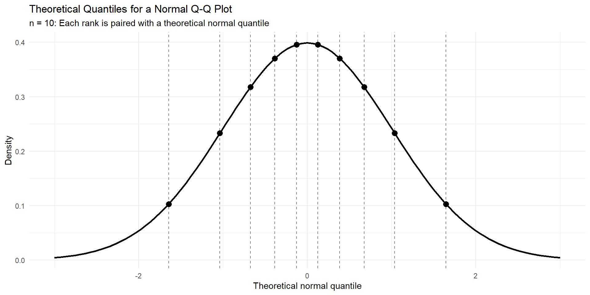

Theoretical Quantiles
You may also see the x-axis back transformed to the original units. Using the quantiles, this is what we would expect for dried weight if our data follwed a perfect theoretical normal distribution.
Theoretical Quantiles
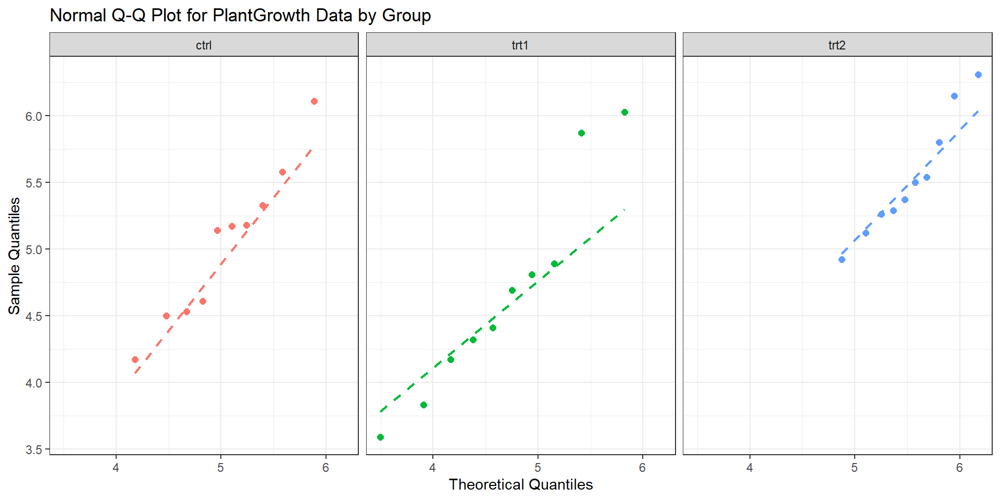
So, how do we feel about our assumption?
Guess the distribution
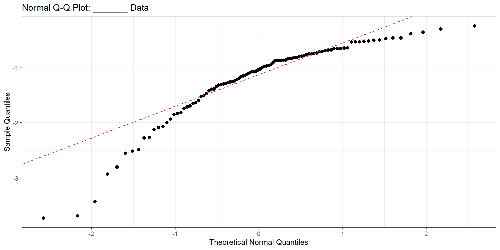
General Rule
Points above the line: Observed values are larger than the line predicts at those theoretical quantiles.
Points below the line: Observed values are smaller than the line predicts at those theoretical quantiles.
The plot
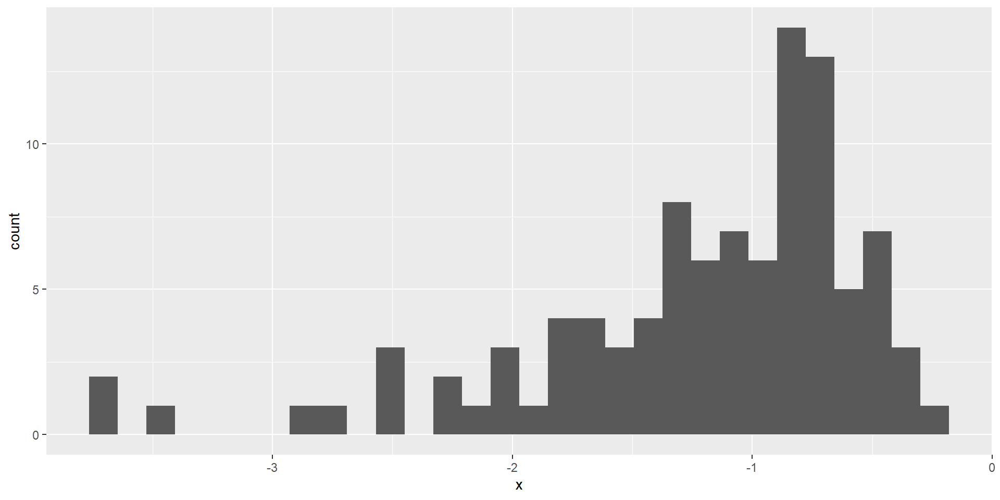
Guess the distribution
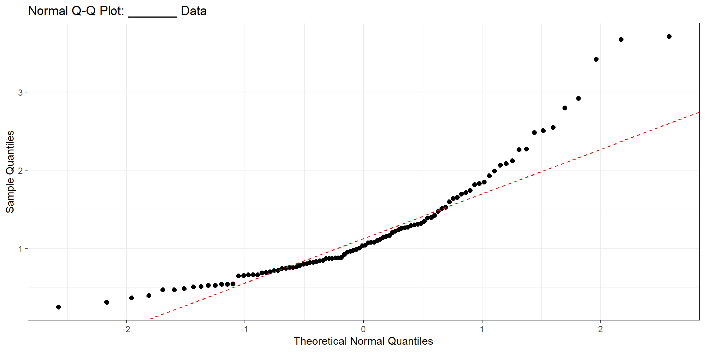
Guess the distribution
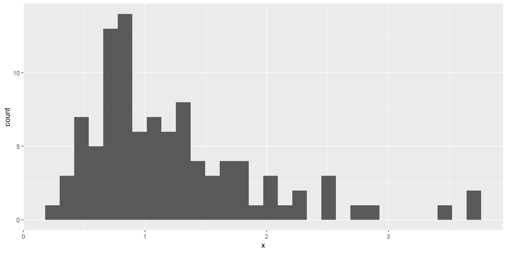
Summary
Your qq-plots can take on many different shapes. There is not right/wrong cut-off. It’s up to you to make a justifiable call
– Right-skewed: The upper tail extends farther above the reference line than expected under normality.
– Left-skewed: The lower tail extends farther below the reference line than expected under normality.
Questions
Equal variance (New!)
The equal variance assumption (also called homogeneity of variance) in ANOVA means that the populations for all groups have the same variance, even if their means differ
\(\sigma_1^2=\sigma_2^2=\cdots=\sigma_k^2\)
\(\sigma^2 = \frac{\sum_{i=1}^{N}(x_i-\mu)^2}{N}\)
Equal Variance
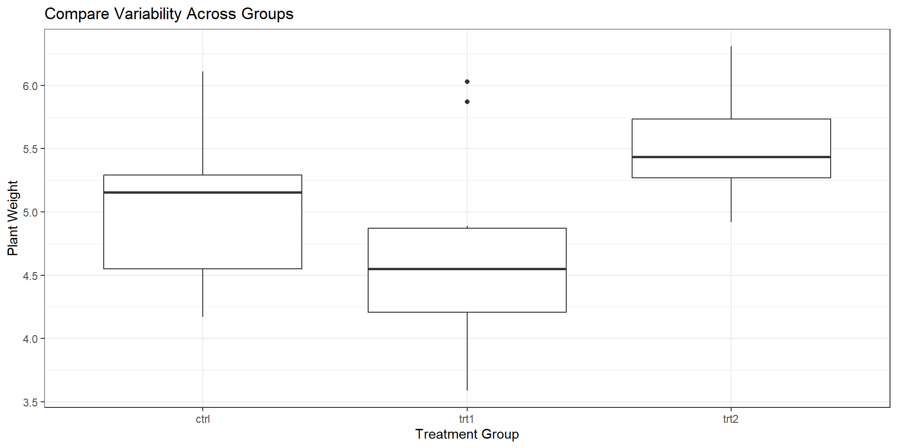
Equal Variance
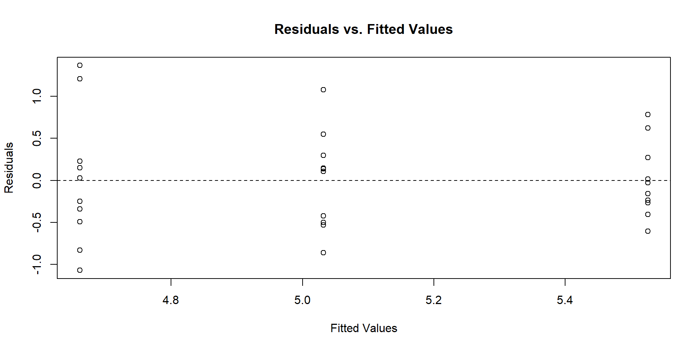
What’s a residual?
What’s a fitted value?
Residual
\(e_i = y_i - \hat{y}_i\)
observed - fitted value
in ANOVA, the fitted value (best guess) is just the mean!
So, the residual in ANOVA is distance between individual values and their group mean
Equal Variance

How do we check the assumption?
Equal Variance
# A tibble: 3 × 2
group sd
<fct> <dbl>
1 ctrl 0.583
2 trt1 0.794
3 trt2 0.443General rule: Is the largest sample standard deviation more than twice the smallest sample standard deviation?
Assumptions
Independence ✓
Normality ✓
Equal Variance ✓
New statistic
\(F = \frac{\text{MS}_{\text{Between}}}{\text{MS}_{\text{Within}}}\)
\(\mathbf{F} = \frac{\frac{\text{SS}_{\text{Between}}}{k - 1}}{\frac{\text{SS}_{\text{Within}}}{N - k}}\)
\(\text{SS}_{\text{Between}} = \sum_{i=1}^{k} n_i (\bar{X}_i - \bar{X}_{\text{grand}})^2\)
\(\text{SS}_{\text{Within}} = \sum_{i=1}^{k} \sum_{j=1}^{n_i} (X_{ij} - \bar{X}_i)^2\)
Draw it out
What would this look like?
That is, draw out how each SS would be calculated.
Plants
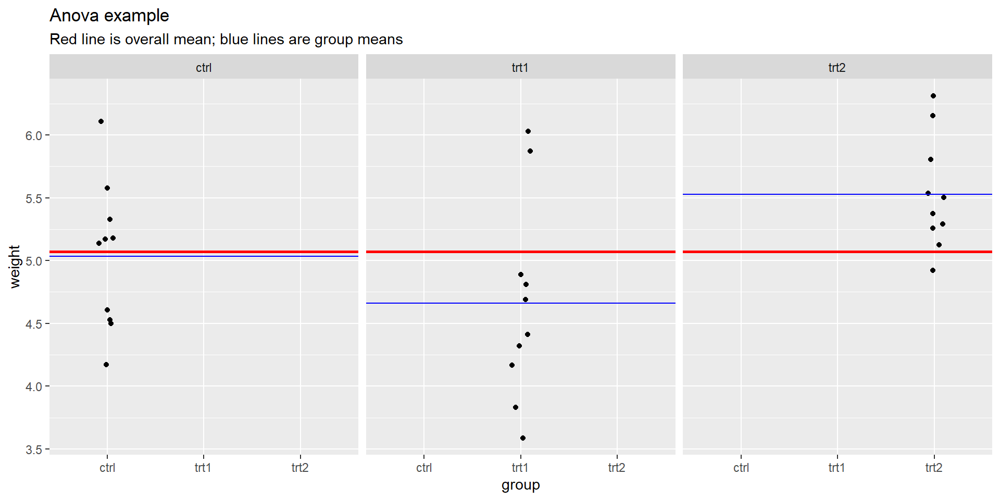
Anova
Df Sum Sq Mean Sq F value Pr(>F)
group 2 3.766 1.8832 4.846 0.0159 *
Residuals 27 10.492 0.3886
---
Signif. codes: 0 '***' 0.001 '**' 0.01 '*' 0.05 '.' 0.1 ' ' 1F-distribution
A continuous, positively skewed probability distribution, characterized by two degrees of freedom (numerator and denominator) that determine its shape.
Anova
Where did all of this come from?
The goal is not for you to be able to calculate these values by hand (besides Df). The goal is for you to understand the relationships between the values of the Anova table.
Df Sum Sq Mean Sq F value Pr(>F)
group 2 3.766 1.8832 4.846 0.0159 *
Residuals 27 10.492 0.3886
---
Signif. codes: 0 '***' 0.001 '**' 0.01 '*' 0.05 '.' 0.1 ' ' 1Definitions
Degrees of Freedom (df) is the number of independent pieces of information used to calculate the statistic
The Sum of Squares (SS) is a measure of total variability (between or within)
The Mean Squares (MS) is an estimate (\(s^2\)) of the population variance (\(\sigma^2\))
It’s a generalized form of \(s^2 = \frac{\sum(x_i - \bar{x})^2}{n-1}\)
Anova table
Where did we get df = 2 for between? Where did we get df = 27 for within?
# A tibble: 3 × 2
group n
<fct> <int>
1 ctrl 10
2 trt1 10
3 trt2 10degrees of freedom
When we estimate the population (grand) mean, there are k-1 independent pieces of information
When we estimate the population means within each group, there are n - k independent pieces of information
Anova: MS
The Mean Squares (MS) is an estimate (\(s^2\)) of the population variance (\(\sigma^2\))
It’s a generalized form of \(s^2 = \frac{\sum(x_i - \bar{x})^2}{n-1}\)
In Anova, it’s calculated by taking \(\frac{SS}{df}\)
Df Sum Sq Mean Sq F value Pr(>F)
group 2 3.766 1.8832 4.846 0.0159 *
Residuals 27 10.492 0.3886
---
Signif. codes: 0 '***' 0.001 '**' 0.01 '*' 0.05 '.' 0.1 ' ' 1Anova: F-statistic
The whole goal of Anova is to compare the variability between groups vs the variability within groups. How can we calculate our F-statistic?
Df Sum Sq Mean Sq F value Pr(>F)
group 2 3.766 1.8832 4.846 0.0159 *
Residuals 27 10.492 0.3886
---
Signif. codes: 0 '***' 0.001 '**' 0.01 '*' 0.05 '.' 0.1 ' ' 1Decision and conclusions
What are they? At the \(\alpha\) = 0.05 level.
So what’s actually different?
Next time!